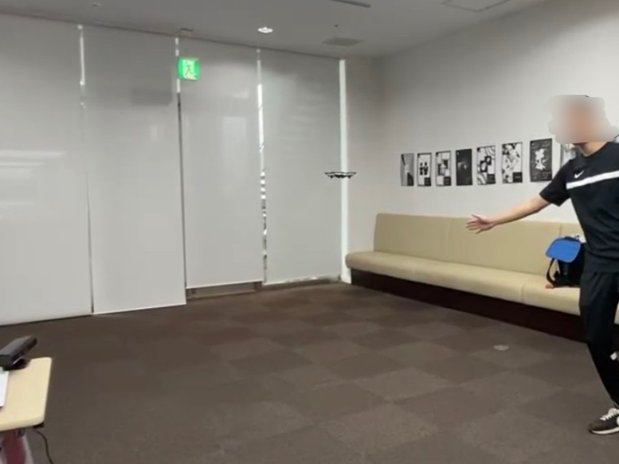
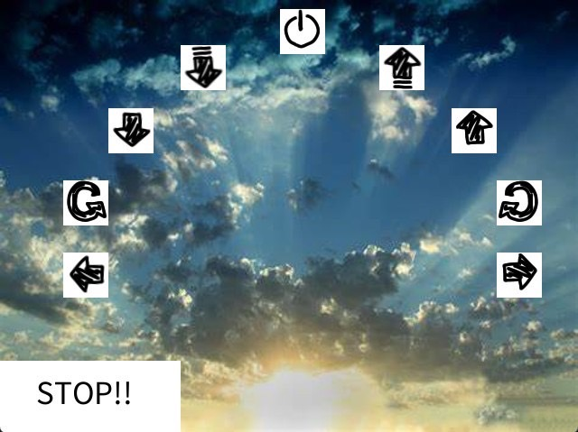
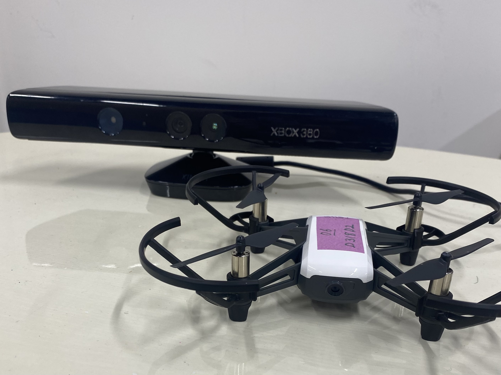

Processing,Arduino,加速度センサ
この作品は，インタラクティブシステム1という儒教で新しいドローン操作の提案という課題でチームで制作を行なった．私たちのチームは，身体の動作を用いたドローン操作の提案を行なった． 手で画面に映るボタンを押し，するとドローンがボタンに対応した動きをする．指でドローンを操作するのではなく，体を動かして操作できるようなシステムである．
Tello SDKを用いて，PCでドローンに操作命令を送れるようにした．Processingを用いて，Kinectを動かし手の位置を取得する．手の位置が各ボタンの位置に重なったらボタンが押され，押したボタンに基づきドローンが対応した動きを行う．